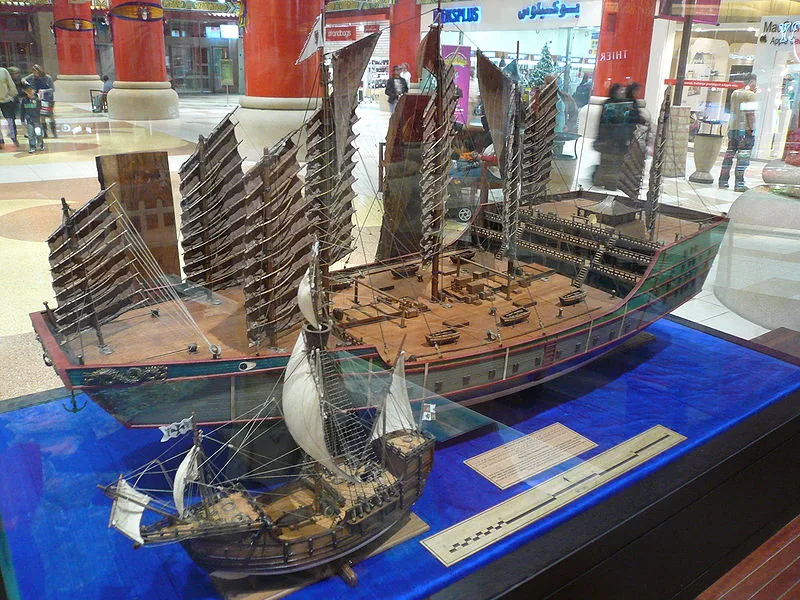

Blog · May 7, 2010
“Book about the variety of the world”
The title is quoted from a hero of mine, Marco Polo.

First allow me to give thanks that it only takes 8 hours to travel from America to London.
Second, thoughts about travel’s influence over time. This globe has little ships drawn on it noting significant navigator voyages: Vasco de Gama, Magellan, Charles Darwin, Zheng Ho. Pardon? I Googled this explorer.
Marco Polo’s Travels comes to mind and I vaguely anticipate what to expect of the Ming Dynasty‘s Admiral of the Treasure Fleet (for real?!). Awe and inspiration ensue and I get excited enough to share.
- In the fall of 1405 a trading party of 28,000 men set sail under Admiral Zheng Ho.
- The ~62 flagships that chaired this moving nation measured approximately 400 feet long by 160 feet wide (122 m x 50 m) and carried ambassadors and the national trade of China. The escort was an additional 190 ships. Compare this to modern day feats of marine lavishness. In 2009, 600 years after Zheng Ho, the largest yacht in the world measured 531 ft (162 m). Head down the list and look at the size of #6. You guessed it. 400 ‘.


- This flagship two year journey took the crew from the mouth of the Yangtzee, in North-East China trading from Vietnam to Java before finally reaching Calicut, West India, their destination. Zheng Ho loaded up on more than just imported items; foreign ambassadors traveled back onboard the troupe as well as on their own accord.
- The fleet (over 300 ships and 28,000 people acompanying the tradeable wealth of China and serving as early forms of dignitaries) eventually takes six more voyages (early evidence of exploration as a profitable investment), venturing to the Persian Gulf and south along Africa’s coast. During each trading expedition, new diplomats are brought to Nanjing and old ones ferried home.

Imagine what commerce I take for granted. Pre-imagine internet or email – instantaneous information distribution – international trade facilitates the dispersion of ideas beyond borders, what a revolution. Globalization infancy!
From warfare (hello, gunpowder and The Prince) and culture, to goods and services, communication has profoundly enhanced the development of the human race. A day in the life of 2010 can incorporate a globe full of cultures and ideas. We sometimes forget, in this world of quickness and connectivity, the extraordinary relativity of when in time we live. Forget 2 months to cross the Atlantic..what if it was not even an option? The beauty of exploration.
May you always remember that the world has more to discover. If you don’t, someone else will get to have all the fun!
Amy
First published on my old blog, amyrobinson.wordpress.com, May 7, 2010.